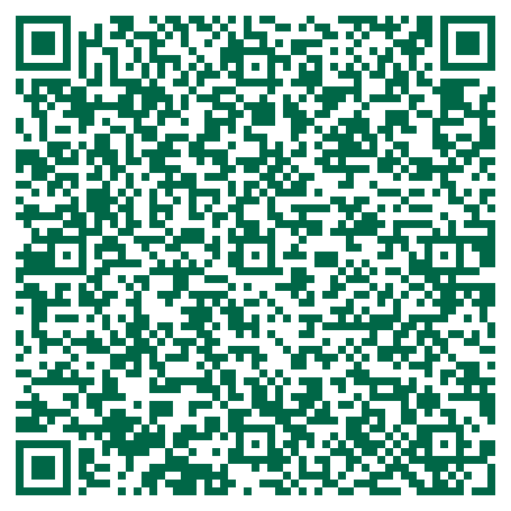

Next Meeting · Journal Club No. 1
AI Governance at an AMC
Development, Implementation & Monitoring
Mason Pearce, MD
Clinical Informatics Fellow
October
2
Friday ·
2026
12:00 - 1:00 PM
Eastern Time · Virtual on Microsoft Teams
Agenda
12:00 - 12:30
Talk: AI Governance at an AMC
Development, implementation and monitoring at an academic medical center
12:30 - 1:00
Student Research Topics
Open discussion of research questions and projects for students seeking mentorship

Scan to join
Opens the Microsoft Teams meeting directly on your phone or laptop.
Calendar invite